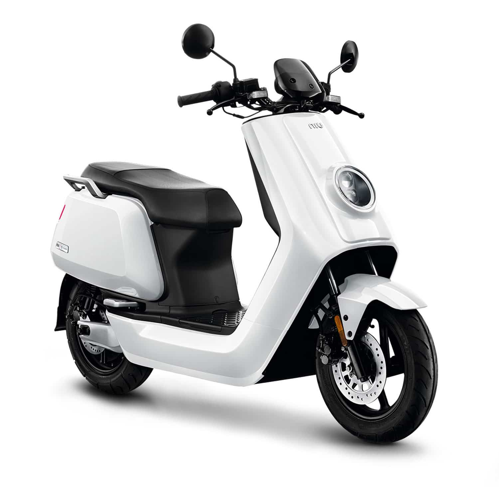
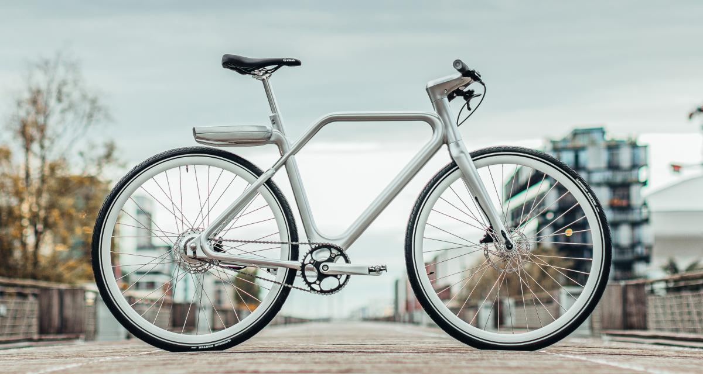
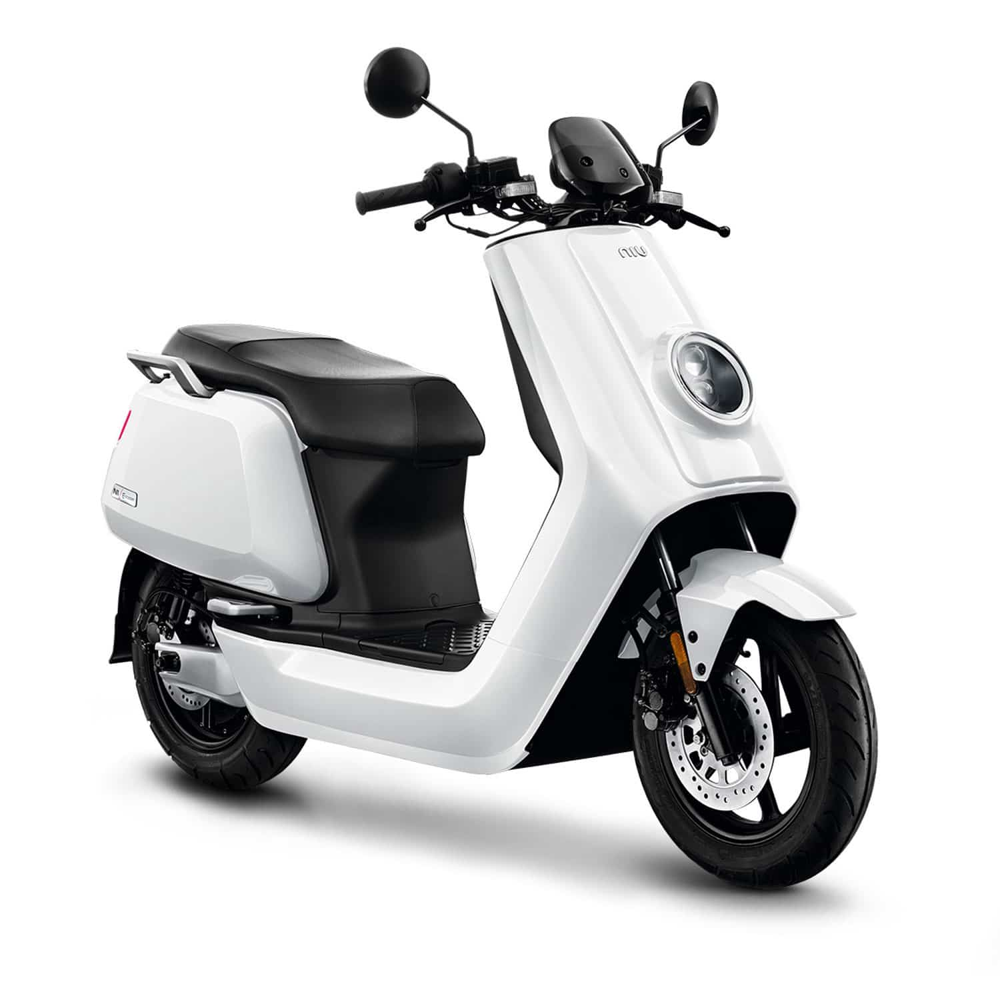
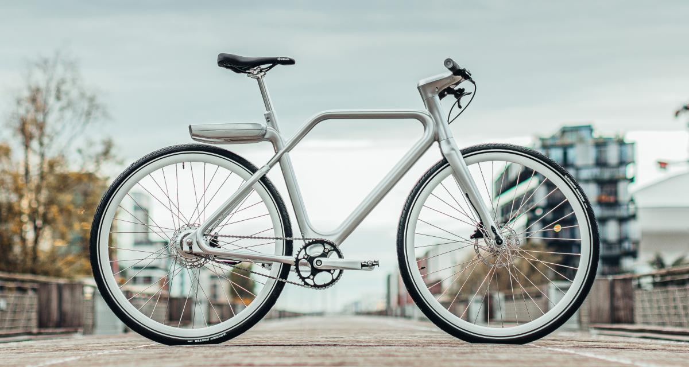

La plateforme de covoiturage & location de véhicule de l'université de Lille
Services

Nous proposons de nombreux véhicules non polluant à la location.
Nous vous mettons également en relation avec d'autres membres de l'université
qui font le même trajet que vous, pour que vous puissiez partager votre véhicule!
→ location de véhicule
→ déplacement à plusieurs
Avantages
Tous les déplacements sont pensés pour réduire vos émissions de carbone. Vous
n'aurez qu'à penser à votre trajet, nous nous occupons du reste!
Economiquement, Co-voit ULille est également très avantageux, avec de petits prix
et des réductions de vos dépenses sur vos trajets quotidiens!
→ pour en savoir plus, contactez-nous!
Nos véhicules populaires 🔥🔥🔥
 



D'où vient Co-voit ULille?
Ce projet a vu le jour pour la rentrée 2021. Co-voit ULille a plusieurs ambitions. Tout d'abord, nous voulons réduire un maximum
l'empreinte carbone des étudiants et de l'ensemble du personnel de l'université. Nous sommes conscient que tous les étudiants veulent
réduire leur impact environnemental, mais ce n'est pas toujours facile par manque de moyens. C'est pourquoi le projet prend en compte
les contraintes économiques qui peuvent exister. Les locations et solutions de covoiturage sont toutes à des prix accessibles pour
l'ensemble des utilisateurs de l'université.
Le projet s'inscrit également dans la démarche de réduction de l'empreinte carbone de l'université de Lille.